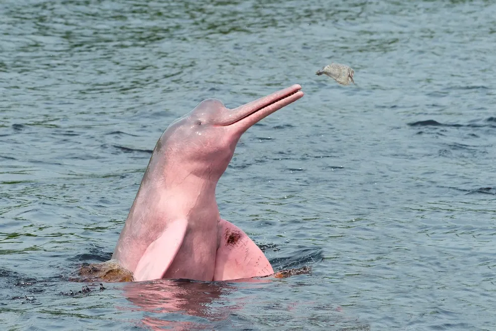
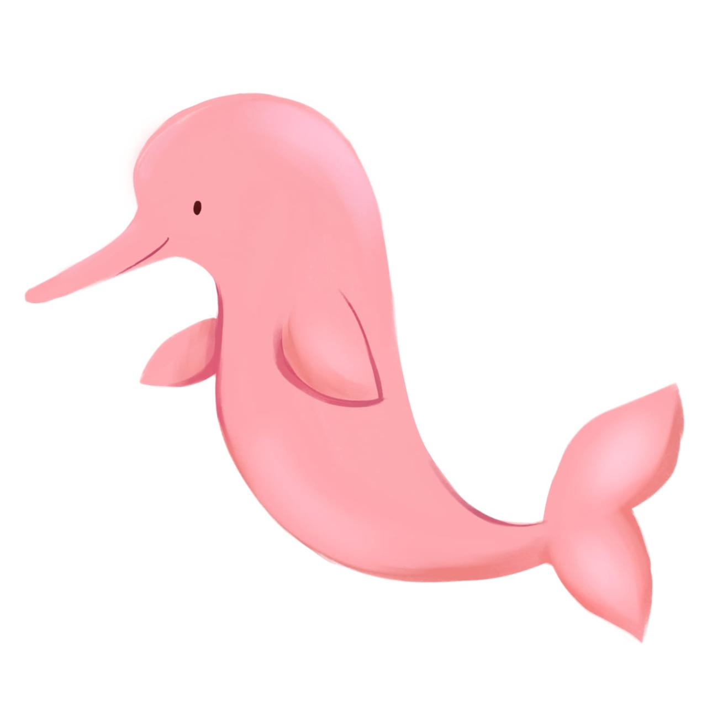
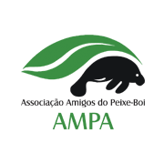

Boto-cor-de-rosa
Inia geoffrensisBioma: Amazônia
Alimentação: Carnívoro
Habitat: Rios, lagos e áreas alagadas da Amazônia
Conservação: Em perígo
Sobre a espécie
O boto-cor-de-rosa é um dos maiores golfinhos de água doce do mundo e chama atenção pela coloração rosada que pode se intensificar com a idade. Possui um focinho comprido, utilizado para capturar peixes entre a vegetação e os obstáculos dos rios. É um animal bastante adaptado aos ambientes alagados da Amazônia, onde utiliza sua capacidade de movimentação para explorar áreas inundadas. Entre suas principais ameaças estão a captura acidental, a pesca ilegal, a poluição e a construção de barragens.
